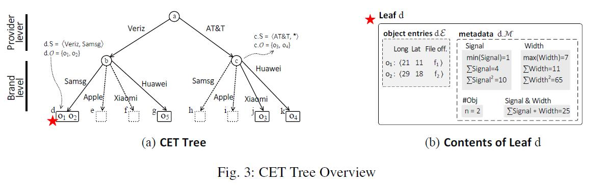
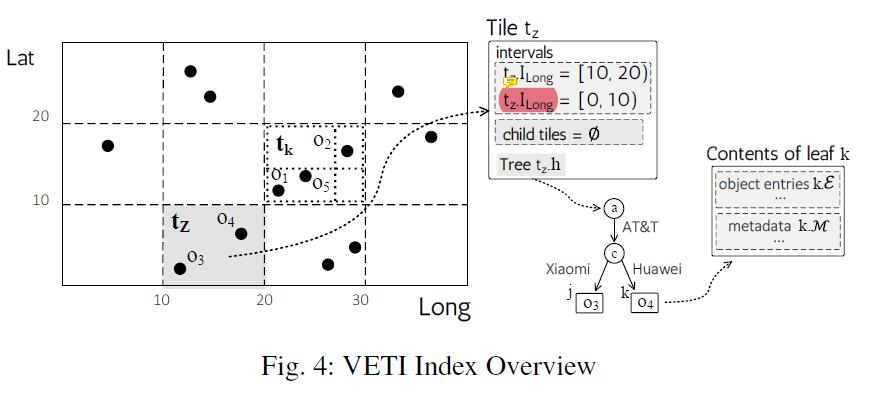
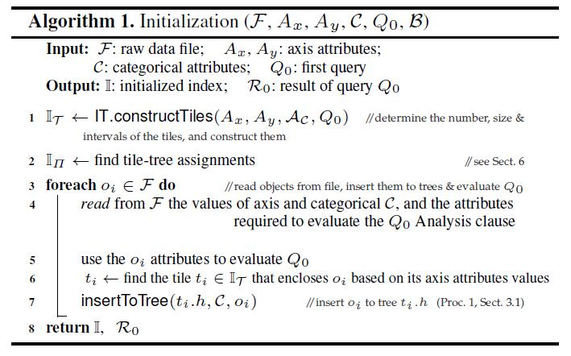

# 概述
文章标题 Resource-Aware Adaptive Indexing for In-situ Visual Exploration and Analytics 含义为：基于资源感知自适应索引方式的现场数据可视化探索与分析。
# 背景
文章希望为数据分析这提供生数据的快速分析方式。有如下要求：
- 数据是基于地图显示的 (关于地理位置的数据)
- 数据需要借助 2D 地图展示
- 地图需要便利地进行缩放、滑动
- 需要进行范围内的统计量、聚合函数计算 / 过滤等数据库查找
- 数据量大
- 在线查询
# 主要贡献
其主要贡献在于：
- 一种通过在主存内生数据上建立混合索引的方式
- 基于分类属性，标准化探索和分析数据的操作，并将操作关联至索引模式
- 一种基于交互信息增量更新索引数据的方法
- 基于资源感知的索引初始化方式（应用于内存有限的硬件）
- 将资源感知的初始化方式转化为一个优化问题，并证明优化问题是 NP-hard 的，同时提出了两种该 NP-hard 问题的近似算法
# 基本记号
| 符号 | 含义 |
|---|---|
| \mathcal{O}=\ | 对象集 (set of Objects) 和其中的对象 (Object) |
| 属性 (Attribute) | |
| 一个 CET 层次结构 (Hierarchy) | |
| h.\mathcal | CET 中包含的对象集 |
| 属性集（和其中的属性） | |
| 的中的属性数，如果 隶属于一个 CET, 那么该 CET 的高度为 | |
| 属性 取值的域 | |
| 某个 CET 的一个节点 (Node) | |
| 某个节点对应的有序属性值列，从 CET 的根节点开始 | |
| n.\mathcal | 节点 所对应的对象集 |
| 一个方片 (tile) | |
| 在属性 下所占据的范围 | |
| 一个 VETI 索引 (Index) | |
| \mathbb{I}_\mathcal | 所对于的方片集 (tiles) |
| \text | tile 的初始化策略 (tiles initialization strategy) |
| \text | 树的初始化策略 (tree initialization strategy) |
| \text | 基于用户交互重新构造 tile 和 CET 的方法 (adaptation strategy) |
# CET-tree
CET - 树 (Categorical Exploration Tree, CET) 是作者提出的一种轻量级的，面向内存的，基于分类属性 (categorical attribute) 组织对象的树形数据结构。与字典树 (trie) 类似。

# 挑战
CET 设计的挑战包括：
- 高效的内存使用
- 降低 I/O 操作
符号系统是什么一摊狗屎 *
# 操作和复杂度分析
# 插入对象
按层高进行遍历，插入到叶子节点。复杂度 . 类似地，建树的复杂度为 .
# 基于过滤获取子对象
文中给出的复杂度是基于枚举的 . 是 CET 中的节点数。
极其容易改进吧。思路包括：
- 属性排序 + 二分查找
- 每层变成一个 hash 表
# 添加新属性
显然树的高度会 ++，于是最坏复杂度是 . 写个 什么鬼？
# 树的空间复杂度
最大节点数为
递归与否差不多，主要看如何表述。
文章还给了一个基本假设：所有节点的内存占用基本相同？？？
一定不相同吧，不然就可以优化。
所以文章最后给出的空间复杂度是
其中 是一个节点的内存占用， 是一个对象的内存占用， 是树的第 层的节点数目，满足 .
# 按属性顺序建树
作者单独提到的，仅使得内存消耗降低 .
# 总结
- 文章只给出了最基本的 CET 操作，换句话说，CET 操作有扩展的可能性
- CET 可加入 cache, 索引等进行加速
# VETI
VETI 是作者提出的一种索引方案，称为可视化探索的方片树索引 (Visual Exploration Tile-Tree Index, VETI). VETI 包括 tile 结构和 CET.
# tiles
方片结构 (tile structure) 是 VETI 的重要组成部分。可以看作一个二维的 data cube (而不是 Treemap).
Tile 结构有如下特点：
- 本身是层次结构
- 在每一个层次结构上，tile 都是不重叠的。

# VETI 初始化
VETI 初始化过程在第一次用户查询时构建。分如下步骤：
- 确定索引特征，即 和对应 CET 结构的确定。
- 解析文件，填充索引
- 计算第一次用户查询

# 问题和方向
CMU 交互定理证明？
Cambridge also
type theory